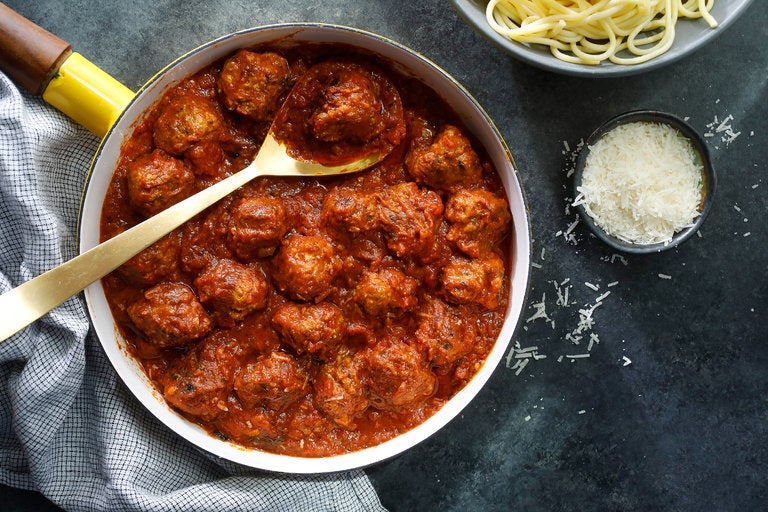

Turkey Meatballs Recipe

Ingredients:
- 1 lb ground turkey
- 1 large egg
- 1/2 cup bread crumbs
- 1/4 cup finely chopped parsley
- 2 cloves garlic, minced
- 1/2 small onion, finely chopped
- 1/2 teaspoon salt
- 1/2 teaspoon black pepper
- 2 tablespoons olive oil
- 1 jar marinara sauce (24 ounces)
Instructions:
- In a large bowl, combine ground turkey, egg, bread crumbs, parsley, garlic, onion, salt, and pepper. Mix well.
- Shape the mixture into 1-inch meatballs and place them on a baking sheet lined with parchment paper.
- Heat olive oil in a large skillet over medium heat. Add the meatballs and cook until browned on all sides, about 5 minutes.
- Once the meatballs are browned, add the marinara sauce to the skillet. Cover and simmer for 15 minutes, or until meatballs are cooked through.
- Serve hot with your favorite pasta and enjoy!